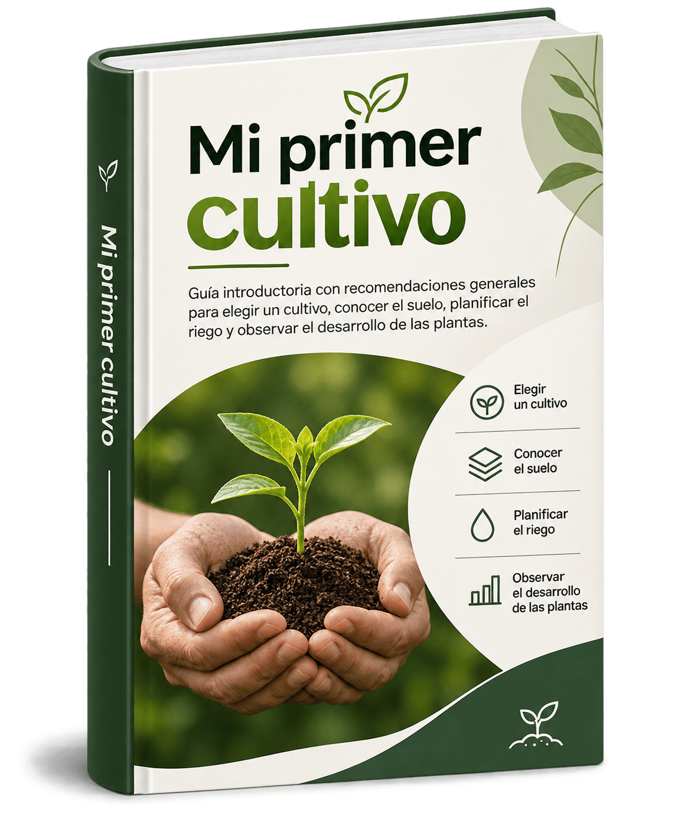

El Campo con Don Julián
Julián Morales comparte más de cuatro décadas de experiencia para ayudar a jóvenes y principiantes a aprender agricultura de forma práctica y responsable.
¡Aprendamos del campo juntos!
Recursos del campo
Guías breves para comenzar, aprender y cuidar tus cultivos.
Errores que enseñan a mejorar tus cultivos
Herramientas básicas y cuidados iniciales
Tecnología para una agricultura inteligente
Un día de trabajo en la granja

Mi primer cultivo
Guía introductoria con recomendaciones generales.